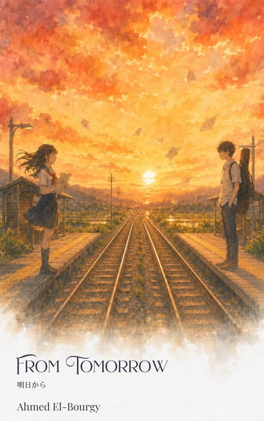

From Tomorrow
明日から
A train line closing in three days. Notes exchanged between two strangers — each dated a day they haven’t lived yet. A story about time, loss, and the moments we almost miss.
Read more about From Tomorrow
Out now on Kindle
桜スライス・カフェ
Thirteen quiet stories from the Café
Somewhere in Cairo, there is a café that was never just a café.
The story
Somewhere in Cairo, there is a café that was never just a café.
Sakura Slice Café began as an email — a simple message sent to a friend who was tired of carrying the world alone. It grew into a place: not quite physical, not quite imaginary, but entirely real to everyone who found their way through its doors.
In thirteen quiet stories, you will meet the people who came to the café and left something behind — or found something they didn’t know they were missing. A boy who already knew how to be kind. A girl who forgot how to cry. A man who rediscovered his language through the taste of something sweet. An artist who drew everyone when no one was watching. A mother who came prepared to love both her sons equally, in the same breath.
Each story is small. Each one carries something.
Sakura Slice Café is a book about being seen. About the ordinary magic of a place that asks nothing of you except that you come in, sit down, and stay as long as you need.
Your table is already waiting for you.
“And I hope, from the depth of my heart, that your adventure leads you to our doorsteps.”
Where to read it
The café keeps its doors open on Kindle. If you would rather shelve it first, Goodreads is the place to keep track of it.
I don’t gather reviews on this page — they live where readers leave them. If the café meant something to you, a few honest words on Goodreads or Amazon is the kindest thing you can do for a small book. And if you would rather tell me directly, write to me instead.
Keep reading

明日から
A train line closing in three days. Notes exchanged between two strangers — each dated a day they haven’t lived yet. A story about time, loss, and the moments we almost miss.
Read more about From Tomorrow
完璧な日の出
Every morning, Hikari chases the perfect sunrise. Then a photograph falls from the sky — already developed, already perfect, and dated tomorrow. A story about memory, loss, and the people we love who never truly leave.
Read more about The Perfect Sunrise
君がいたとき
Sou’s grandmother leaves him a cassette tape. When he plays it, he hears his own voice — older, crying, begging someone not to leave. A story about grief, attention, and the one direction time moves in.
Read more about When You Were There
The cat finds you first. He leads you to Aoi Shiori, a little bookshop that wasn’t there yesterday and won’t be there tomorrow. Everyone who finds this place has lost something along the way.
Read more about The Blue Bookmark Bookshop